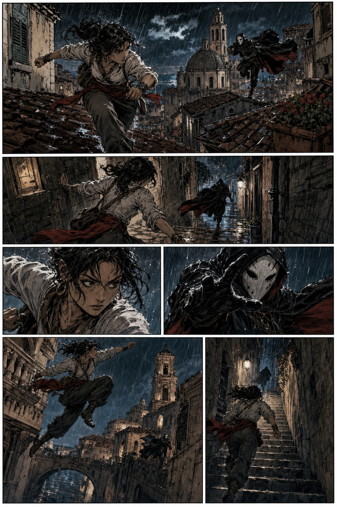
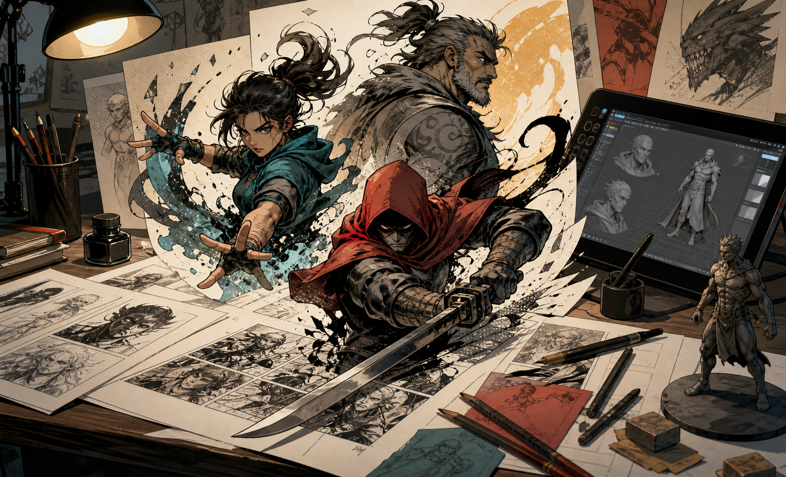
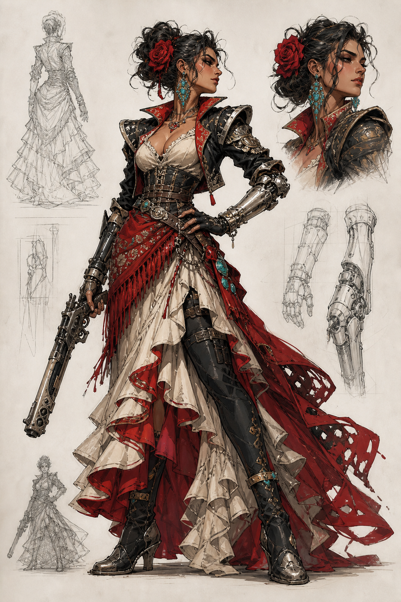
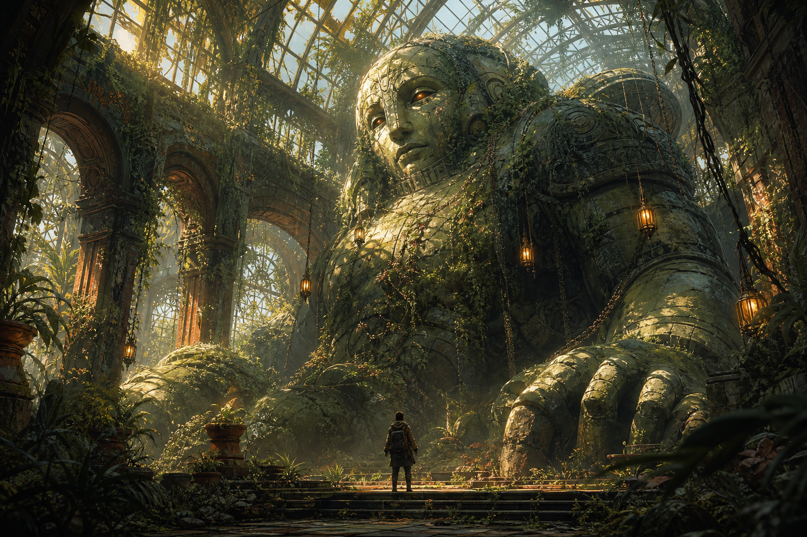

Ilustración · Cómic · 2D/3D
Jesús Carmona
Portfolio visual para obra narrativa, personajes, concept art y proyectos de cómic con una mirada gráfica potente y contemporánea.
Sobre el artista
Ilustrador, dibujante de cómic y diseñador visual
Jesús Carmona desarrolla imágenes con vocación narrativa: personajes, mundos visuales, escenas secuenciales y piezas que combinan dibujo, color, composición y sensibilidad de diseño.
Su perfil encaja en proyectos editoriales, cómic, concept art, ilustración promocional y desarrollo visual en 2D y 3D. Esta web está preparada para sustituir las imágenes de ejemplo por obra real, páginas completas, bocetos y encargos publicados.
- Cómic
- Narrativa secuencial, página, ritmo y acción.
- Ilustración
- Personajes, portadas, escenas y acabado editorial.
- 2D / 3D
- Diseño de formas, volumen, materiales y concept visual.
Cómic destacado
Zona para publicar páginas, capítulos o avances
Galería
Dibujos, personajes y arte conceptual

Personaje
Cazarrecompensas escarlata

Escena
Guardián del invernadero
Cómic
Secuencia bajo la lluvia
Contacto